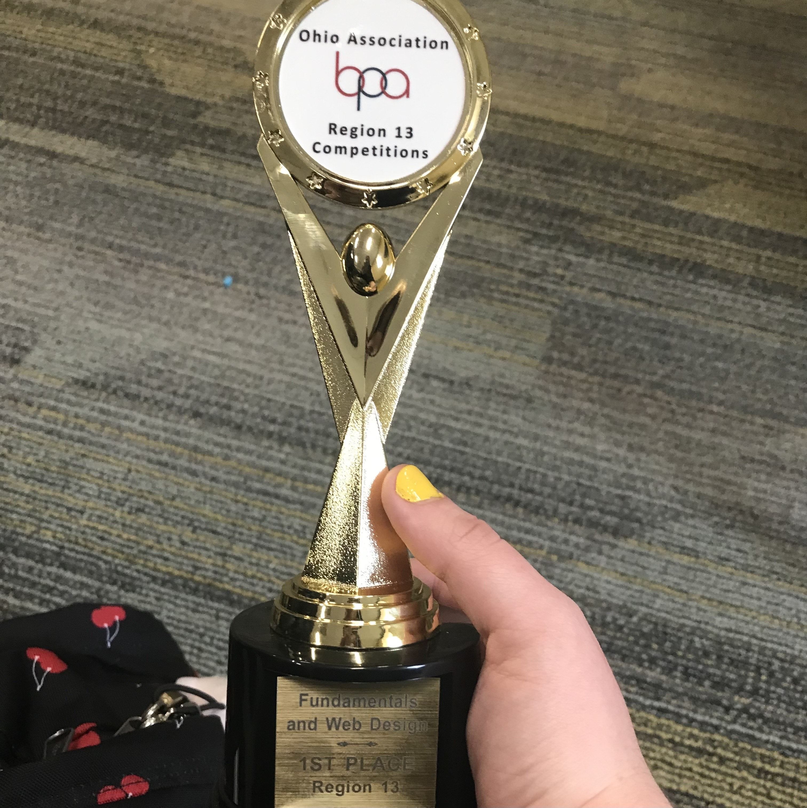
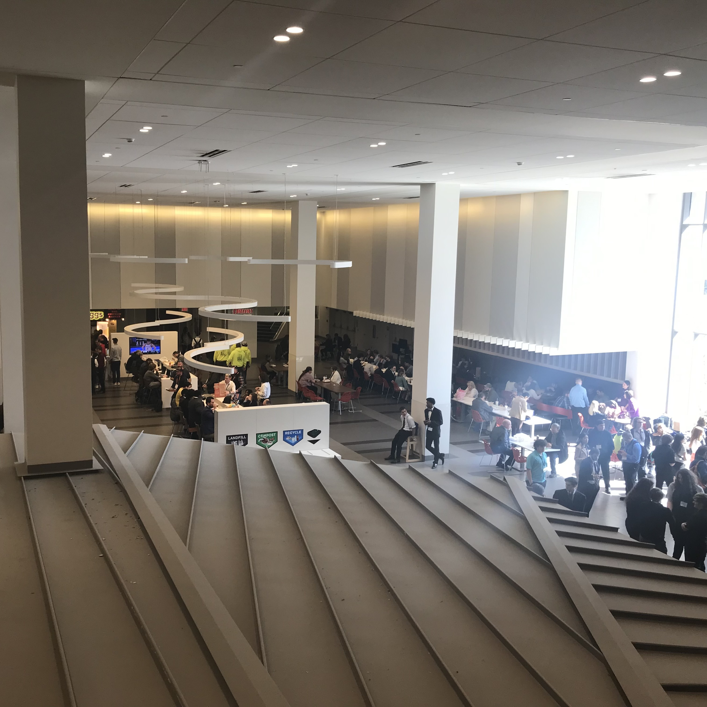
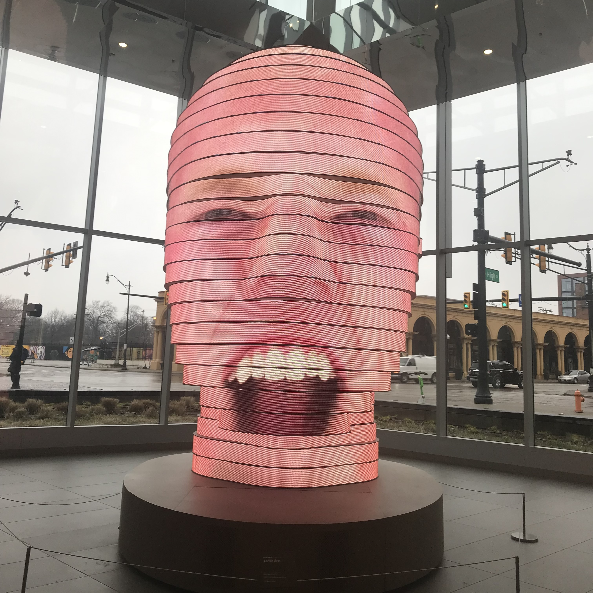

|  |  |  |
The Columbus Competition - or what Losing Taught me about Life
The year was 2023. I was a junior in high school. And it was my first year of ever attending the esteemed Live Oaks Career Campus, as a student in their IT academy. Pressure was building. Stakes were high. But somehow, through all of my hard work and effort, I had risen to the top of the class.
And now, I was standing right in the front of the room. My teachers were getting ready to announce the winners of the class web design and IT competitions. My heart was pounding. My palms were sweaty. And then, they stated the names of the winners.
“And this year, we have a tie!” My web design teacher said enthusiastically. And then, she announced the name of one of my classmates – accompanied by my own.
I had won the class level web design competition! I was officially the best web designer in my class. Or – one of them. I did tie after all. Soon, she awarded me with the trophy and announced that he and I were headed to the state competition.
I was thrilled. This was going to be my one chance to make it big. To prove my knowledge and worth. To become the official best high schooler in web design in the state. Yet, one competition – and a whole lot of waiting – later, I came home in tears knowing I hadn’t even placed.
At the time, my academic achievement was my life. I had gone through all of my previous years of education at Batavia, and the only way I had ever received any recognition there was through my own academic achievement. If I wasn’t succeeding academically, nobody seemed to have any reason to care for me. So, when I lost what I felt was my only chance to shine, my world felt shattered.
But I learned something through all of that. And that’s that academic achievement wasn’t the only reason for people to care about me. My peers and teachers at the time didn’t lose faith in my ability over one competition, nor did they turn their backs on me for one bad experience. Well, I’ll take that back. One student I was friends with did. But that’s besides the point.
I learned that people had other reasons to value me outside of academic achievement. My teachers and friends didn’t like me because I was successful or “looked good on paper.” They valued me because I had initiative. I had passion for everything I was learning, and the zest to keep putting all of my energy into what I was passionate about. At the end of the day, they didn’t care about one cheesy competition held out in some convention center in Columbus. They just wanted to give me the opportunity to win, because they thought if anyone would be able to, it would be me. Even if I lost, they wouldn’t lose their respect for me. And I’m grateful to have gotten that opportunity, even if I ultimately lost.
And moving forwards, I’ve now learned to focus less on the material side of achievement. It doesn’t always matter if I look perfect on paper. The things that do matter are my abilities to work towards achieving the goals I set for myself, and the content of my character. At the end of the day, people aren’t going to remember my grades, awards, or every single piece of art or website I create. What they’re going to remember is my kindness towards them and passion for what I do.
Visual Aids
For this page, I've included 3 pictures. One of the trophy I had won for winning the regional level competition and being able to move on to state, one of the convention center food court in Columbus, and one of the famous Face. I chose the first picture because it's relevant to the story, and proves that I won the initial competition to go to Columbus. The second image was chosen to show the magnitude of the event and give a better idea of where my learning experience took place. And the last image was something more lighthearted I saw while I was there. Stories about unsuccessful events aren't always the most enjoyable things to read, so I wanted to include something more silly to lighten the mood a little.
Ultimately, the three photos I chose were mostly a means to proof of the fact that I attended this event and that everything on this page happened in real life. Even though it was disheartening to lose, I learned a lot and still tried to have fun while I was out on this important trip to Columbus.